From usethis::ui functions to cli
Gábor Csárdi
2021-04-26
Source:vignettes/usethis-ui.Rmd
usethis-ui.RmdHow to
usethis::ui_code()
usethis::ui_code(x)ui_todo("Redocument with {ui_code('devtools::document()')}")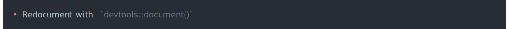
In general inline code formatting can be done with inline styles in cli. The default theme has a "code" class, but it also one for functions, so this can be either of:
cli_ul("Redocument with {.code devtools::document()}")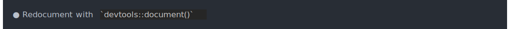
cli_ul("Redocument with {.fun devtools::document}")
usethis::ui_code_block()
usethis::ui_code_block(x, copy = interactive(), .envir = parent.frame())ui_code_block("{format(cli_code)}")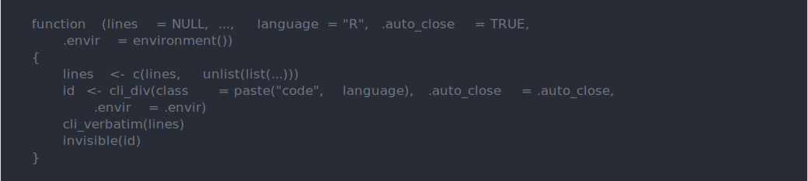
cli_code() produces similar output and it also syntax highlight R code:
cli_code(format(cli_code))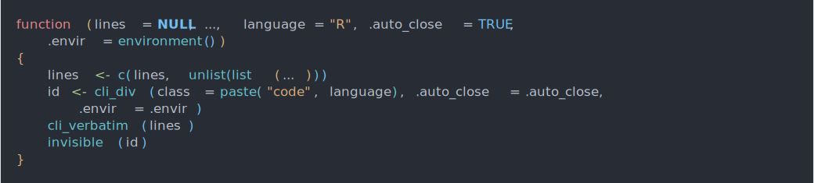
However, cli does not copy stuff to the clipboard, so this has to be done separately.
Another difference is that it also does not run glue substitutions on the code text, so if you want that to happen you’ll need to do that before the cli call.
usethis::ui_done()
usethis::ui_done(x, .envir = parent.frame())name <- "VignetteBuilder"
value <- "knitr, rmarkdown"
ui_done("Setting {ui_field(name)} field in DESCRIPTION to {ui_value(value)}")
This is probably closest to cli_alert_success():
cli_alert_success("Setting {.field {name}} field in DESCRIPTION to {.val {value}}")
If you want to handle success and failure, then maybe the cli_process_*() functions are a better fit:
tryCatch({
cli_process_start("Setting {.field {name}} field in DESCRIPTION to {.val {value}}")
Sys.sleep(1) # <- do the task here, we just sleep
cli_process_done() },
error = function(err) {
cli_process_failed()
cli_alert_danger("Failed to ...")
}
)
usethis::ui_field()
usethis::ui_field(x)name <- "VignetteBuilder"
value <- "knitr, rmarkdown"
ui_done("Setting {ui_field(name)} field in DESCRIPTION to {ui_value(value)}")
cli has a "field" class for inline styling:
cli_alert_success("Setting {.field {name}} field in DESCRIPTION to {.val {value}}")
Just like usethis::ui_field() and similar usethis functions, cli collapses inline vectors, before styling:
name <- c("Depends", "Imports", "Suggests")
ui_done("Setting the {ui_field(name)} field(s) in DESCRIPTION")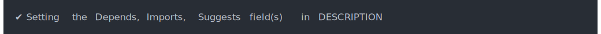
cli_alert_success("Setting the {.field {name}} field{?s} in DESCRIPTION")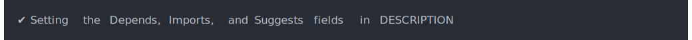
cli also helps you with the correct pluralization:
name <- "Depends"
cli_alert_success("Setting the {.field {name}} field{?s} in DESCRIPTION")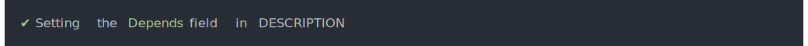
usethis::ui_info()
usethis::ui_info((x, .envir = parent.frame())ui_info("No labels need renaming")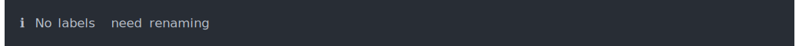
This is simply cli_alert_info():
cli_alert_info("No labels need renaming")
usethis::ui_line()
usethis::ui_line(x, .envir = parent.frame())ui_line("No matching issues/PRs found.")
This is just a line of text, so cli_text() is fine for this. One difference is that cli_text() will automatically wrap the long lines.
cli_text("No matching issues/PRs found.")
usethis::ui_nope()
ui_nope(x, .envir = parent.frame())cli does not support user input currently, so this has to stay in usethis.
usethis::ui_oops()
usethis::ui_oops(x, .envir = parent.frame())ui_oops("Can't validate token. Is the network reachable?")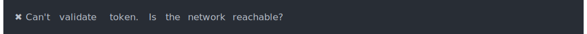
This is mostly just cli_alert_danger(), but for see also the cli_process_*() alternatives at usethis::ui_done().
usethis::ui_path()
usethis::ui_path(x, base = NULL)ui_path() formats paths as relative to the project or the supplied base directory, and also appends a / to directories. cli does not do any of these, but it does have inline markup for files and paths:
logo_path <- file.path("man", "figures", "logo.svg")
img <- "/tmp/some-image.svg"
ui_done("Copied {ui_path(img)} to {ui_path(logo_path)}")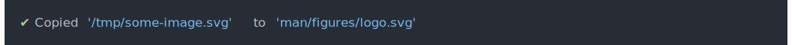
cli_alert_success("Copied {.file {img}} to {.file {logo_path}}")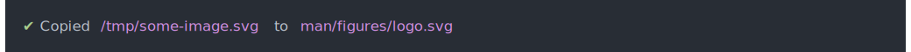
usethis::ui_stop()
usethis::ui_stop(x, .envir = parent.frame())ui_stop() does glue substitution on the string, and then calls stop() to throw an error.
cli does not have any tools to throw errors currently.
usethis::ui_todo()
usethis::ui_todo(x, .envir = parent.frame())This is a bullet, so either cli_ul() or cli_alert_info() should be appropriate:
ui_todo("Redocument with {ui_code('devtools::document()')}")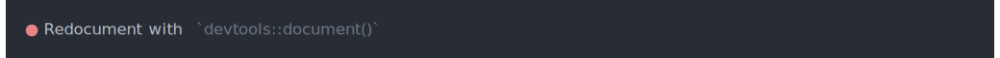
cli_ul("Redocument with {.fun devtools::document}")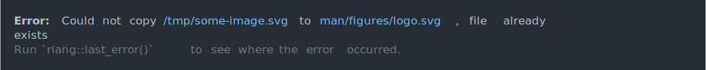
usethis::ui_value()
usethis::ui_value(x)The "value" inline class is appropriate for this.
name <- "VignetteBuilder"
value <- "knitr, rmarkdown"
ui_done("Setting {ui_field(name)} field in DESCRIPTION to {ui_value(value)}")
cli_alert_success("Setting {.field {name}} field in DESCRIPTION to {.val {value}}")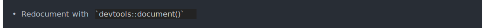
usethis::ui_warn()
usethis::ui_warn(x, .envir = parent.frame())ui_warn() does glue substitution on the string, and then calls warning() to throw a warning.
cli does not have any tools to throw warnings currently.
usethis::ui_yeah()
ui_yeah(x, .envir = parent.frame())cli does not support user input currently, so this has to stay in usethis.